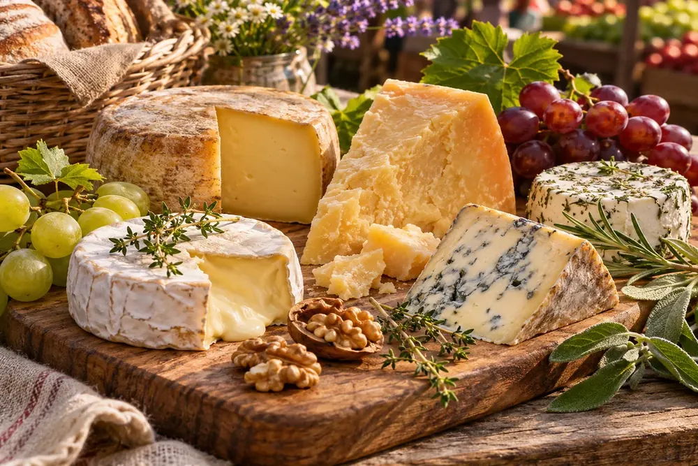
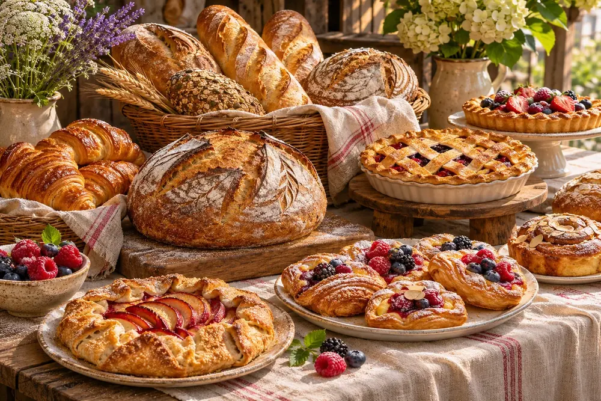
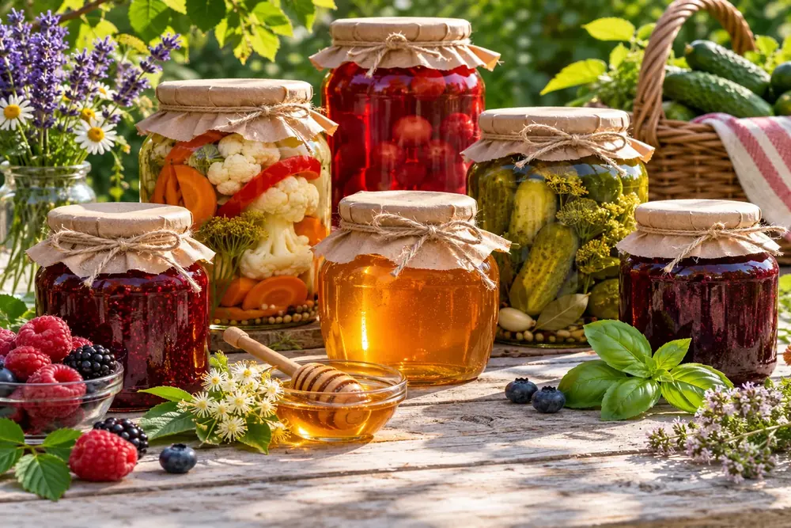

С грядки
Фермерская ярмарка
Вкусно. Свежо. По-приморски!
Овощи с грядки, домашние деликатесы и продукты от местных производителей — всё, за что мы любим настоящую ярмарку.
Фотография фермерской пары создана как иллюстрация и не изображает реальных участников.
Дары Приморья
На ярмарке встречаются продукты, в которых чувствуется забота, мастерство и щедрость нашего края.




Изображения продукции созданы для оформления сайта и служат иллюстрациями; они не подтверждают наличие конкретных товаров у участников.
Встречаемся на ярмарке
Приходите познакомиться с местными производителями и выбрать продукты для своего стола.
Присоединяйтесь
Выберите свою категорию и свяжитесь с организаторами, чтобы получить актуальный комплект форм и условий участия.
Организаторы подскажут актуальный список документов и порядок подачи заявки.
Запросить список документовПолучите перечень документов для индивидуального предпринимателя напрямую у организаторов.
Запросить список документовУточните условия и комплект документов для граждан, ЛПХ и КФХ у организаторов.
Запросить список документовВажная информация
Актуальные тексты и формы выдаёт организатор ярмарки. Запросите нужный документ по электронной почте или телефону.
Оригинальные юридические страницы и ссылки на заявления не включены в это обновление. Документы, уже находящиеся в репозитории, оставлены без изменений.
Наше сообщество
Публикуются только сведения, разрешённые к открытому размещению. Список можно искать по названию, продукции и населённому пункту.
Загружаем открытый реестр…
Обратная связь
Поделитесь впечатлением о ярмарке или задайте вопрос организаторам через форму обратной связи.
До встречи
Ярмарка «4 сезона» — Владивосток, улица Жигура, 2Б.
Открыть адрес на картеЯрмарка
«4 сезона»
Владивосток
ул. Жигура, 2Б